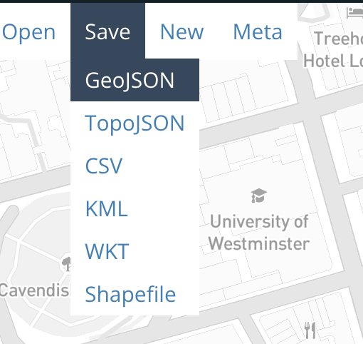

5. Saving Your Digitized Water Pumps Data
Once you’ve digitized and labeled all of the water pumps from the Snow map, it’s time to save your work . geojson.io makes this easy by letting you export your spatial data in several common formats — perfect for use in GIS software, web maps, or data analysis.
Step-by-Step: Save Your Data
- In the upper-left corner of the screen, click the “Save” menu
- You’ll see a list of format options

Export Format Options
Here’s what each format is and when you might use it:
GeoJSON
The default and most widely used format for web maps and simple GIS workflows. Use this if you plan to open the file in QGIS, Leaflet, or GitHub.
TopoJSON
A compressed format that encodes shared boundaries efficiently. Great for complex maps on the web but less commonly supported in desktop GIS software.
CSV
Exports feature data (including geometry) as a comma-separated table. Best for working in Excel, Google Sheets, or other data tools — though spatial data management is limited.
KML
Use this format if you plan to view your features in Google Earth .
WKT (Well-Known Text)
A text-based format for geometries. Useful in certain GIS databases and geospatial programming environments.
Shapefile
A classic GIS format used in ArcGIS and QGIS. This option downloads a
.ziparchive containing all required components (.shp,.shx,.dbf, etc.).
Recommended Format for This Workshop
We recommend saving your work as GeoJSON for this exercise:
- It keeps both geometry (point locations) and properties (your
labelvalues) - It’s easy to open in other tools like QGIS, Mapshaper, or GitHub
It preserves coordinate precision and structure
Click GeoJSON , and a
.geojsonfile will download to your computer.
Pro tip: The file will be saved as something unhelpful, like map.geojson or map(2).geojson, so rename the file something like snow_water_pumps.geojson for clarity.
In the final section, we’ll explore how to visualize and share your data, and give you ideas for where to go next with your new skills.